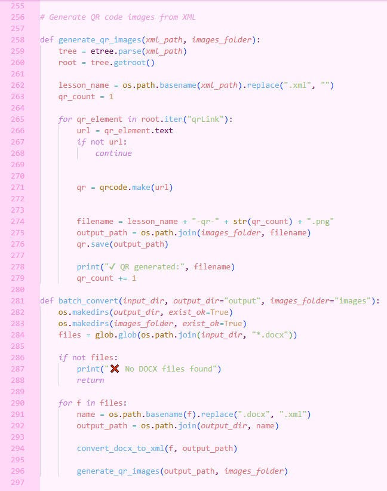
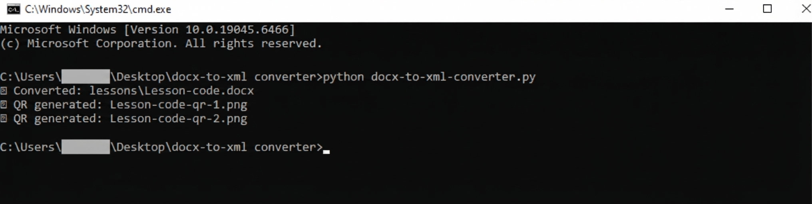
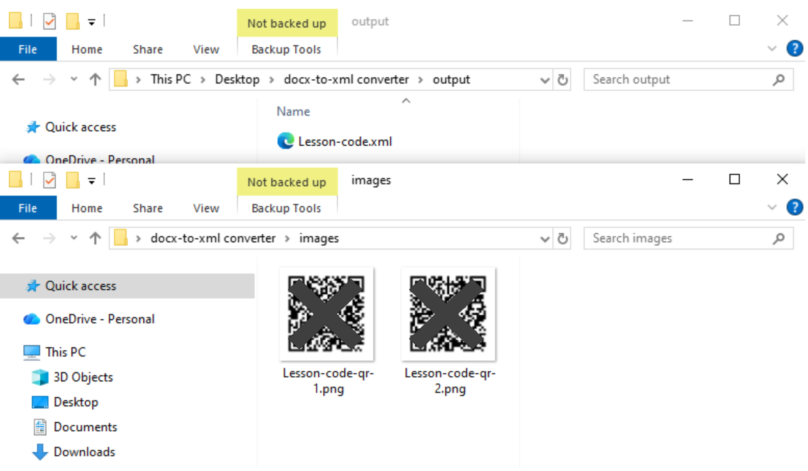
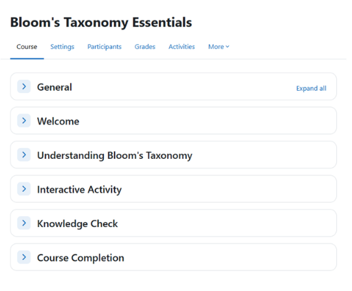
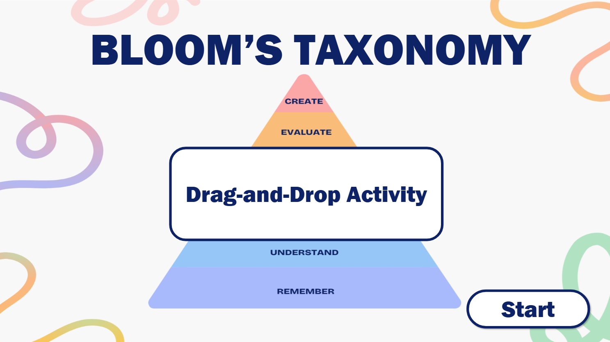
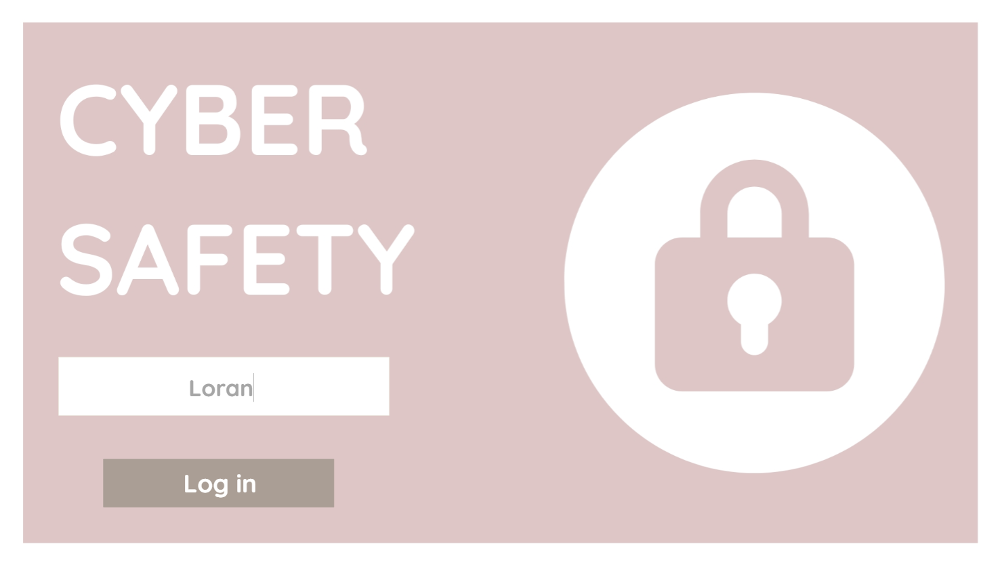
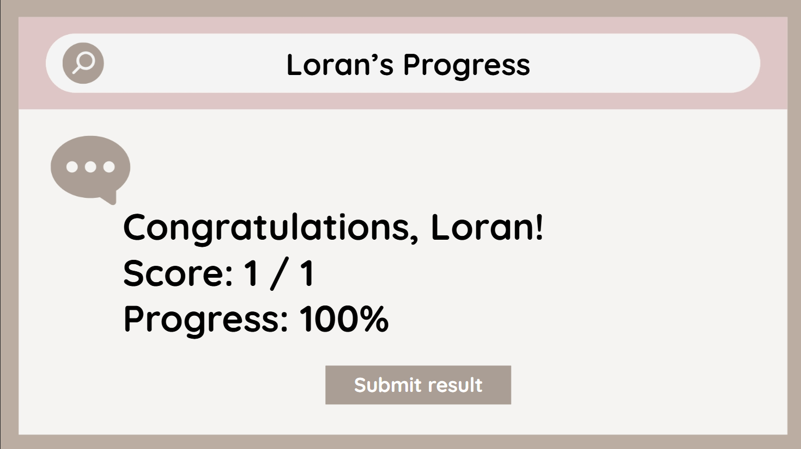
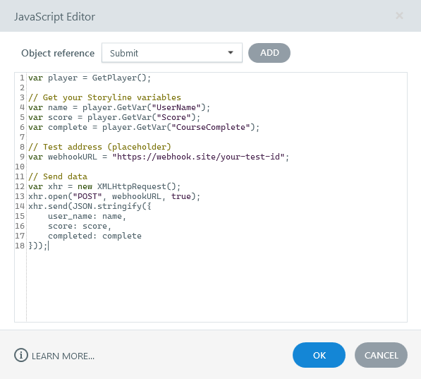
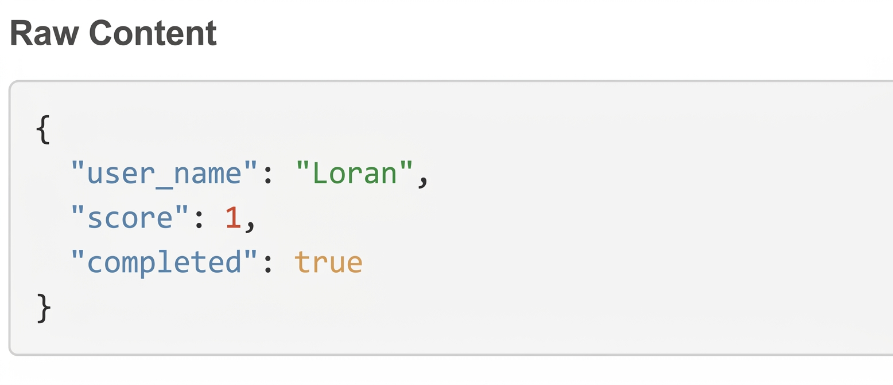

Case study · In use by my team
Worktext Studio
A browser tool that lets my team check and review worktext pages before they become PDFs.
- JavaScript
- Apps Script
- Google Sheets
Work
Tools, games and learning platforms. Start with the three case studies, then explore the rest.
Case study · In use by my team
A browser tool that lets my team check and review worktext pages before they become PDFs.
Short write-up · Python
Reads Word lessons marked with simple tags, turns them into structured XML for InDesign, and makes a QR code for every link. A whole folder, one command.
What goes in: a Word lesson
[ENGAGE] [LESSON_TITLE]Float or Sink?[/LESSON_TITLE] [BODY]Have you ever pushed a beach ball underwater?[/BODY] https://example.com/float-video [/ENGAGE]
Writers mark each part with a tag
What comes out: clean XML
<lesson> <engage> <lessonTitle>Float or Sink?</lessonTitle> <body>Have you ever pushed a beach ball underwater?</body> <qrLink>https://example.com/float-video</qrLink> </engage> </lesson>
Sections, text and links, ready for InDesign
A peek at my code

The result



Case study · Storyline
Serve six pets the right flavor, letter by letter.

Case study · Phaser
Find the 15 verbs among 30 floating words.
Short write-up · Storyline
Twelve situations, four ways to respond. Your answers reveal which Philippine mythical creature matches your learning style.
Answer 12 situations

Each answer type belongs to one creature
Variables keep score
Four counters, one per answer type
Meet your creature

Triggers reveal the highest count
Short write-up · Moodle
A full Moodle course built around Bloom's Taxonomy, with a Storyline activity inside it and progress tracked from start to finish.
The learner's path
Moodle checks off each step until the course is complete
The course in Moodle

Every section, in order
The drag-and-drop activity

Built in Storyline, added to Moodle as a SCORM package
Short write-up · Storyline + JavaScript
A pretend learning platform that sends each learner's result to an outside service the moment they click Submit.
The learner logs in and submits


My code sends it

What arrived at the webhook

The webhook test page, showing exactly what arrived